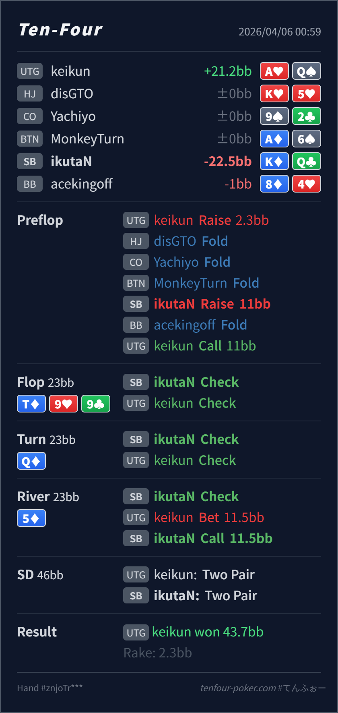

Preflop
境界KQo は domination を受けやすく、SB 3bet 候補としては境界です。
主論点は、SB からの KQo 3bet がどこまで境界かと、turn Q♦ で delayed c-bet を持てるかです。当時の思考メモはないので、「broadway だから 3bet したい」「top pair になったので showdown に回したい」という仮定で見ます。結論は、flop check と river call はかなり自然で、再レビューの焦点は preflop の頻度と turn の受け身です。
K♦Q♣T♦ 9♥ 9♣ / Q♦ / 5♦broadway だから 3bet したくなる、top pair に改善したので showdown へ回したくなる という仮定でレビューします。K♦Q♣2.3BB, SB raise 11BB, UTG callT♦ 9♥ 9♣ / Q♦ / 5♦11.5BB, SB call
境界KQo は domination を受けやすく、SB 3bet 候補としては境界です。
T♦ 9♥ 9♣良い
Hero は two over + gutshot で最低限 defend できますが、無理に c-bet を打つ board ではありません。
Q♦許容だが受け身
Hero は top pair に改善し、この node では thin value / protection を取りにいける位置です。
5♦良い
Hero の KQ は check-call range の上位で、かなり自然な bluff-catcher です。
| 論点 | その場で置きがちな見立て | どこがズレたか | 次回の基準 |
|---|---|---|---|
preflop の KQo | broadway で見た目も強いので SB から 3bet したくなる | UTG open-call range はかなり強く、KQo は domination を受けやすい境界 hand です。 | 見た目の強さ より 相手の continue range に対して何に支配されるか を見る |
turn Q♦ の check | top pair になったので showdown に回したくなる | flop check-check 後の UTG には A-high, JJ-88, Jx の弱い部分も残り、Hero は thin value / protection を取りにいけます。 | 改善した turn では 守る だけでなく 何から value/protection を取れるか を確認する |
| ストリート | その時点の見え方 | 判断の焦点 | 評価 | 推奨 |
|---|---|---|---|---|
| Preflop | UTG open-call range は QQ-JJ, AQ, KQs, 一部 suited broadway を中心にかなり強めです。 | KQo は domination を受けやすく、SB 3bet 候補としては境界です。 | 境界 | 相手が正確寄りなら fold 寄り、そうでなければ低頻度 3bet は成立します。 |
Flop T♦ 9♥ 9♣ | UTG call range には TT, 99, AQ, JJ, ATs, KQs などが残り、かなり粘りやすいです。 | Hero は two over + gutshot で最低限 defend できますが、無理に c-bet を打つ board ではありません。 | 良い | OOP では check が自然です。 |
Turn Q♦ | flop check-back 後、UTG には A-high、middle pair、slowplay、broadway が広く残ります。 | Hero は top pair に改善し、この node では thin value / protection を取りにいける位置です。 | 許容だが受け身 | small から medium の delayed c-bet を混ぜたいです。 |
River 5♦ | triple check line のあと、UTG の half-pot は AQ, QJ, diamond なしの thin value と一部 bluff が混ざりやすいです。 | Hero の KQ は check-call range の上位で、かなり自然な bluff-catcher です。 | 良い | ここは素直に call でよいです。 |
KQo は UTG 相手だと domination を受けやすいので、普段は少し絞った方が安定します。KQo の 3bet はかなり減らして問題ありません。Q♦ のような改善カードでは自分から thin value を取りにいく価値が上がります。